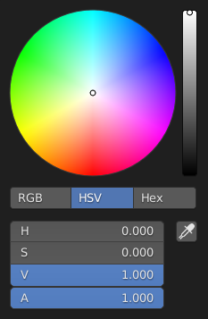

拾色器¶

HSV色盘。¶
拾色器是用于指定颜色值的弹出菜单。拖动选择时同时按住 Ctrl ，用于吸附色调，快速选择基础色。
- 拾色框
用于选择第一和第二种颜色成分，其形状 类型 可以选择。
- 颜色滑块
右侧的滑块用于指定第三种颜色成分，也可以使用 Wheel 调节。
- 色彩空间
使用下方的按钮选择 色彩空间 。
RGB, HSV/HSL, Hex
- 颜色值
Blender使用(0 to 1.0)数值表示RGB与HSV颜色。
十六进制 (Hex) 表示为
RRGGBB，还支持RGB十六进制速记色， 如深黄FFCC00可以简写为FC0。对于可以使用透明色的操作，下方还会显示 "A" 值滑块。
- 吸管
吸管工具 (吸管图标) 可以从Blender窗口内部取样颜色。
Note
In Blender, the Hex and HSV/HSL values are automatically Gamma corrected; however, for the RGB values, they are in Scene Linear color space, and are therefore not gamma corrected. For more information, see the Color Management and Exposure page.